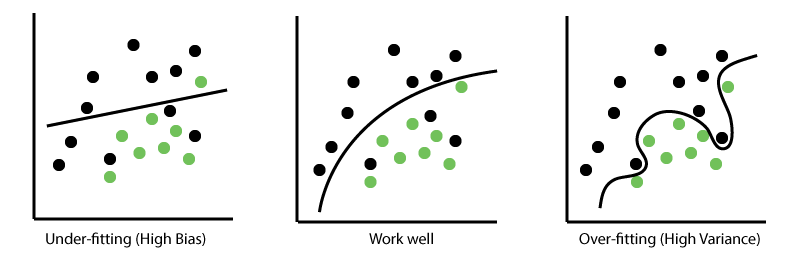

Neural networks are a type of machine learning model inspired by the way biological neurons process information. They consist of interconnected artificial neurons that learn patterns from data. Neural networks are widely used in artificial intelligence for tasks such as image recognition, speech processing, language translation, and prediction. Instead of following only explicitly programmed rules, they adjust internal parameters during training to improve their predictions.
Neural networks learn by processing examples and comparing their predictions with the correct answers. A learning algorithm uses the resulting error to update the network's parameters. After training, the network can apply the patterns it learned to new data. The quality of its results depends on factors such as the training data, network architecture, and training process.
A typical neural network consists of three types of layers: an input layer, one or more hidden layers, and an output layer. The input layer receives data, such as numerical measurements or image pixels. Hidden layers transform that information using weighted connections, mathematical operations, and activation functions. The output layer produces the network's final prediction, such as a category label or a numerical value.
Each connection has a weight that determines how strongly one neuron influences another. Neurons also commonly use a bias and an activation function to help the network learn complex relationships. During training, backpropagation calculates how the prediction error relates to the network's parameters, and an optimization algorithm updates those parameters to reduce the error. Networks with many hidden layers are often described as deep neural networks.
Neural networks can learn complicated patterns from large amounts of data and perform well on tasks that are difficult to solve with manually written rules. They are especially useful for recognizing objects in images, understanding speech, processing text, and identifying relationships in complex datasets. With sufficient training data and an appropriate architecture, they can generalize their learned patterns to examples they have not encountered before.
However, neural networks also have limitations. Training large models can require substantial computing power, time, and data. Networks may overfit when they memorize details of their training data instead of learning patterns that generalize well to new examples. They can also produce incorrect predictions, inherit biases from their training data, and be difficult to interpret. Techniques such as validation, regularization, and testing on unseen data help evaluate and improve their reliability.

Overfitting occurs when a model learns the training examples too closely, including noise or accidental details. As a result, it may perform well on training data but poorly on unfamiliar examples. To reduce overfitting, developers can use techniques such as regularization, dropout, early stopping, and additional representative training data. Evaluating a model on separate validation and test datasets helps determine whether it can generalize beyond the examples used to train it.